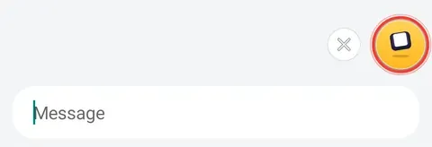
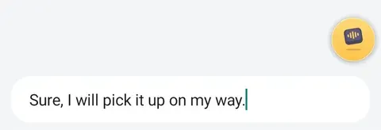

Android test
Help test ThumbFree
ThumbFree is free voice typing for Android. Before it comes to Google Play, we need people to try it and tell us how it went.
This test is for Android. ThumbFree for iPhone is coming to the App Store.

Tap the yellow bubble and talk.

Tap it again. Your words are typed where the cursor is.
- Free. No account, no ads, no tracking.
- Private. Speech becomes text on your phone and never leaves it.
- Works offline after setup downloads the speech model (731 MB, so use Wi-Fi).
- English or 25 European languages. Android 13 or newer.

Continue on your Android phone
Scan the code with your phone’s camera, or type this address:
kabrapratik28.github.io/ThumbFree/beta
Join in 2 steps
It takes about 2 minutes. Then stay opted in for 14 days: Google Play requires it.
-
Step 1 of 2: Join the tester group
Google asks which account to use: pick the one your phone’s Play Store uses. Tap Join group, then Join group again in the box that opens.
Open Google GroupsGoogle Groups link opened
Other testers can’t see who joined.
-
Step 2 of 2: Join the Play test and install
Pick the same account. Tap Become a tester, then Download it on Google Play, then Install.
Open the Play testGoogle Play link opened
App not available? Wait 2 minutes, then open it again.
Already a tester? Install from Google Play
After you install
Open ThumbFree. Choose a language and follow setup.
What to try
- Reply to a chat with your voice.
- Dictate a long note, 30 seconds or more.
- Turn on airplane mode and dictate a message. It still works.
- Use it for a few days, wherever you type.
What to tell us
Was setup clear? Did the bubble show up where you type? Were your words right? What was slow or confusing? Tell us your phone model too.
Questions
Why does it need accessibility?
It’s how an Android app can show a bubble next to the text field you’re in and type into it. ThumbFree uses it only for that. It reads only the field you’re typing in, never types into password fields, and nothing it reads leaves your phone.
Google Play says data is shared with the developer
That’s Google Play’s standard text for every test. ThumbFree itself has no account, no analytics and no tracking. It uses the internet for one thing: downloading the speech model, once.
How do I leave?
On the Play test page (step 2), tap Leave the program. Uninstall ThumbFree like any app.